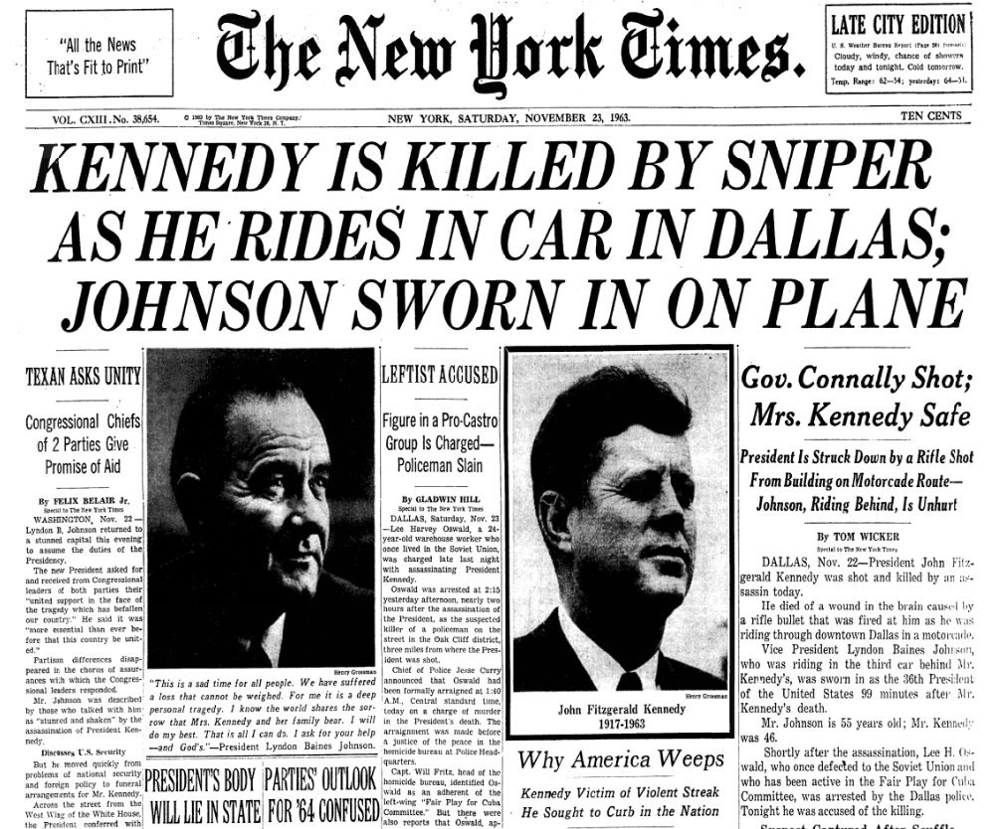
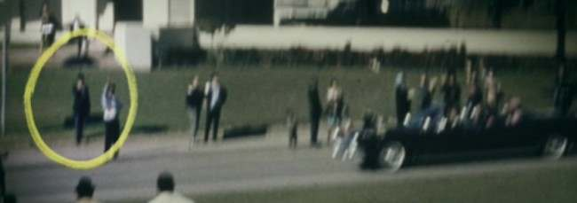

History
John F. Kennedy, the 35th president of The United States, was assassinated on November 22, 1963, in Dallas, Texas.
Conspiracy
There were many suspicions and theories to come up from J.F.K.s assassination. Many people believe that there were multiple gunmen planning on the attack, which then goes onto the Umbrella Man, a mysterious figure holding a black umbrella on the day of Kennedy’s assassination. People believe that the Umbrella Man shot a poison dart into Kennedy’s neck, immobilizing him so that the shooter could get a clear shot of Kennedy.
